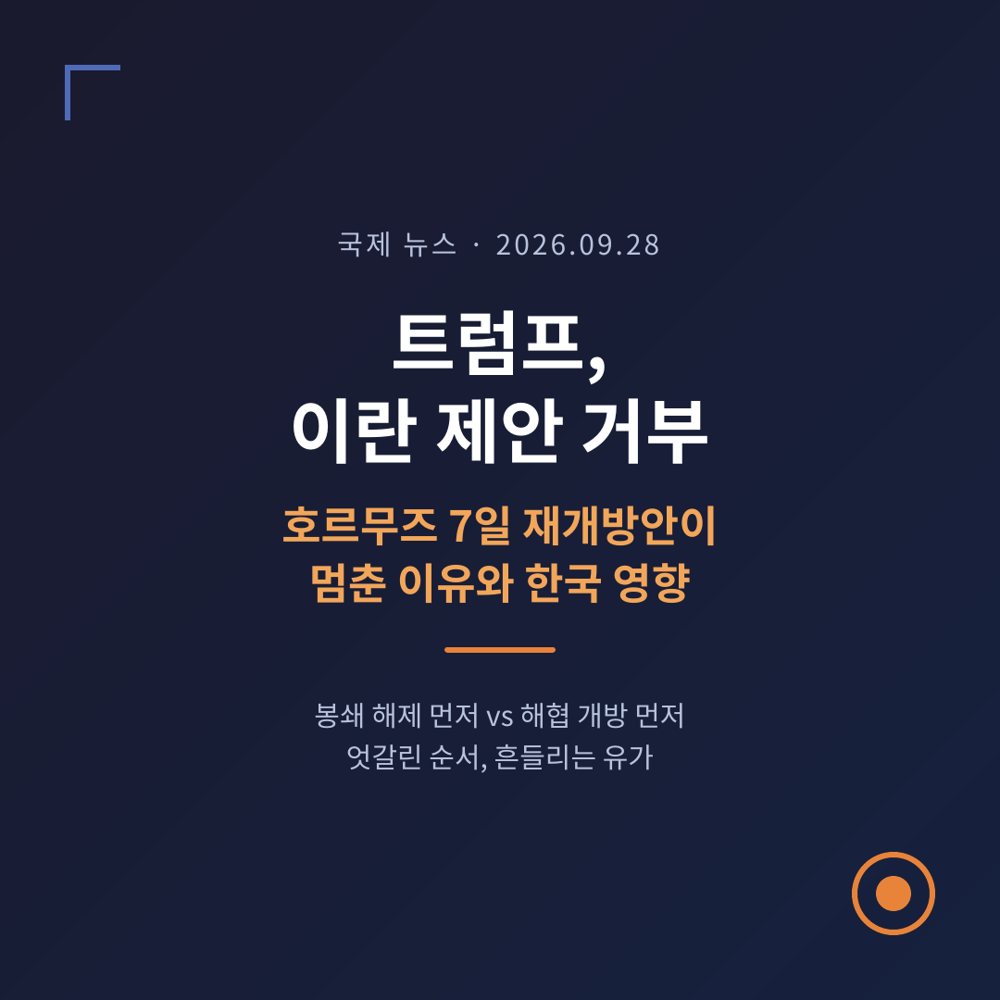
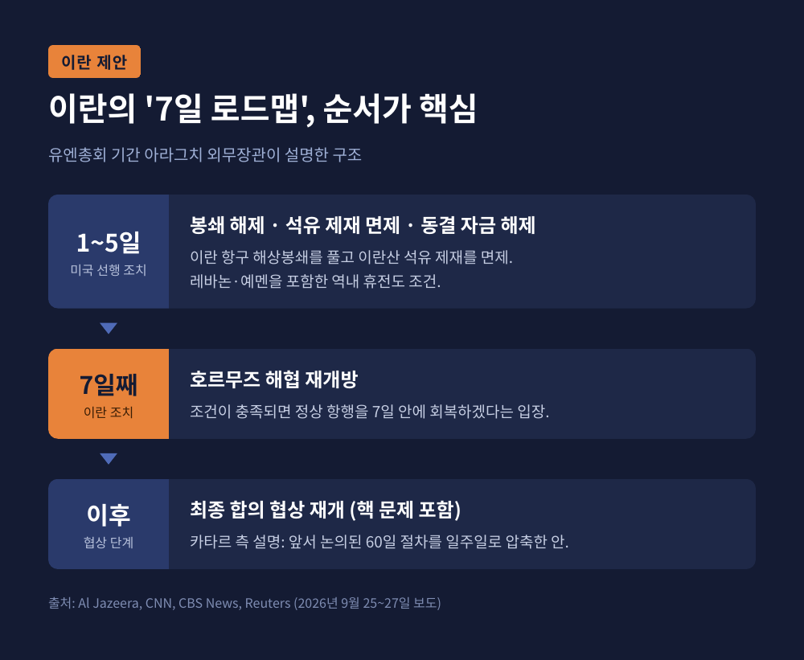
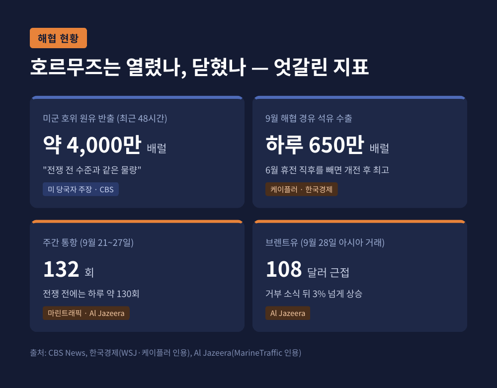
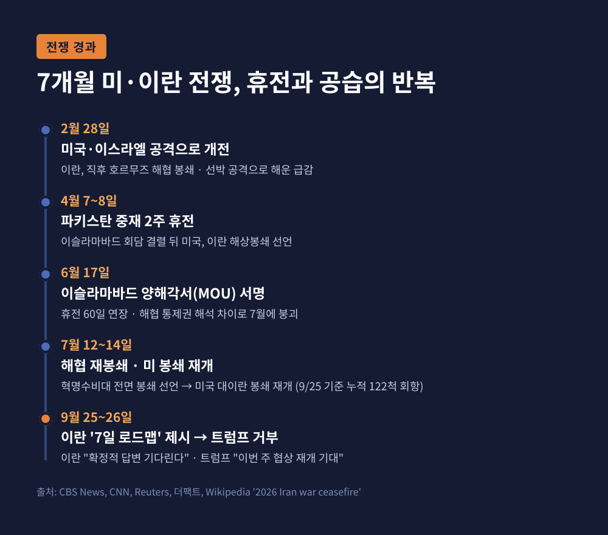
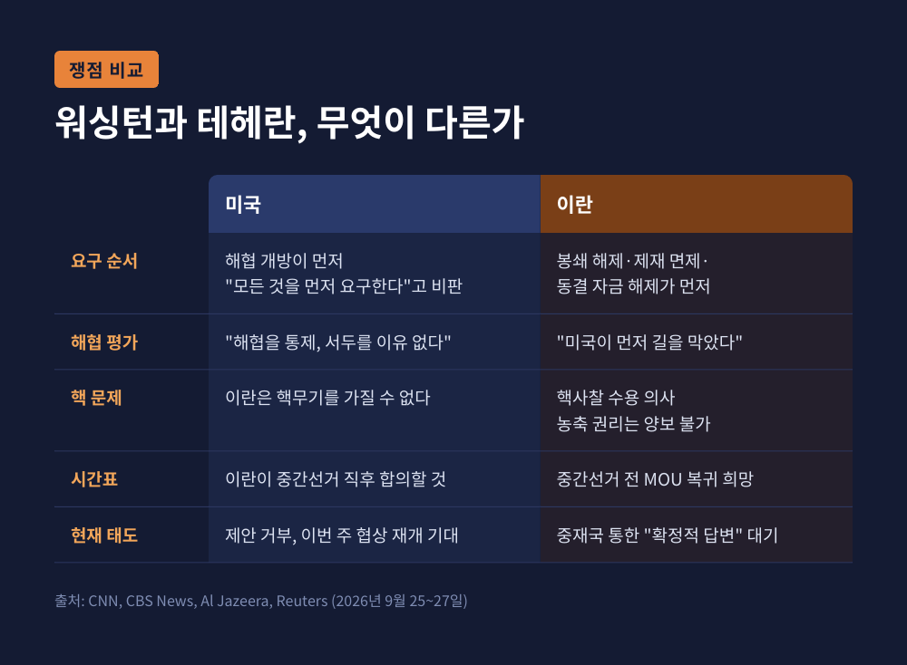
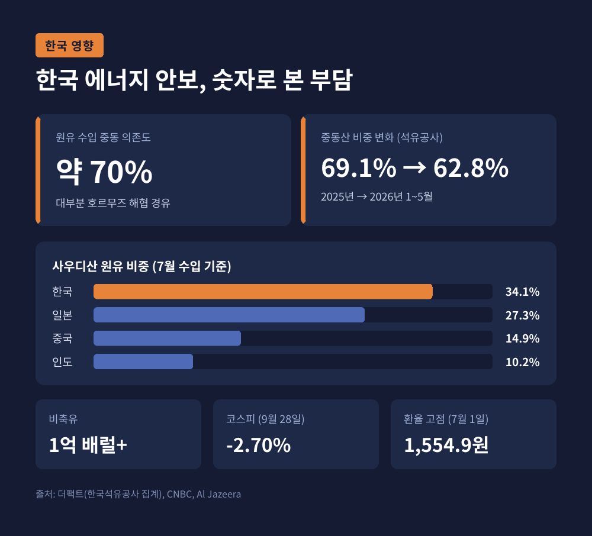

이번 글에서는 트럼프 대통령이 이란의 '7일 내 호르무즈 해협 재개방' 제안을 거부한 소식을 정리해 보겠습니다. 제안에 무엇이 담겼는지, 양측은 각각 어떤 논리를 내세우는지, 그리고 유가와 한국 에너지 안보에는 어떤 파장이 오는지 차례로 살펴봅니다.
3줄 요약 - 이란은 유엔총회 기간에 미국이 해상봉쇄를 풀고 석유 제재를 면제하면 7일 안에 호르무즈 해협을 다시 열고 핵 협상을 재개하겠다고 제안했습니다. - 트럼프 대통령은 9월 26일 "받아들일 수 없다"며 거부했지만, 다음 날 이번 주 협상 재개를 기대한다고 밝혔습니다. 이란은 중재국을 통한 "확정적 답변"을 기다린다는 입장입니다. - 거부 소식 뒤 브렌트유는 108달러 가까이 올랐고, 9월 28일 코스피는 2.70% 떨어졌습니다. 중동 원유 의존도가 높은 한국에는 부담이 이어집니다.
발단은 뉴욕 유엔총회였습니다. 아바스 아라그치 이란 외무장관은 9월 25일(현지시간) 기자들에게 새 평화안을 설명했습니다. 카타르 중재국을 거쳐 미국에 이미 전달했다는 설명도 덧붙였습니다(Reuters 보도).
골자는 순서입니다. 미국이 먼저 이란 항구에 대한 해상봉쇄를 풀고, 이란산 석유 제재를 면제하고, 동결 자금을 풀어야 합니다. 레바논과 예멘까지 아우르는 역내 휴전도 조건에 들어갔습니다. 아라그치 장관은 이 조치가 4~5일이면 끝날 수 있고, 7일째에 해협을 열고 최종 합의 협상에 들어갈 수 있다고 했습니다(Al Jazeera).

카타르 측 설명에 따르면 이 안은 앞서 논의된 60일 절차를 일주일로 압축한 형태입니다(CBS 보도). 아라그치 장관은 조건이 6월 양해각서에 담긴 것 이상은 아니라고 강조했습니다(CNN).
하루 뒤인 9월 26일, 답은 백악관 앞에서 나왔습니다. 트럼프 대통령은 테네시로 떠나며 "그들의 제안을 거부한다"고 말했습니다. 이란이 "크게 지고 있어서" 해협을 당장 열고 싶어 한다는 주장이었습니다(Reuters·CNN).
이번 거부가 단순한 협상 결렬로 끝나지 않는 이유가 있습니다. 호르무즈 해협은 전쟁 전 세계 석유 공급의 약 5분의 1이 지나던 길목입니다(Al Jazeera). 그 해협을 누가 쥐고 있느냐가 협상 전체의 무게중심이기 때문입니다.
예전엔 해협 봉쇄가 이란의 가장 강한 카드로 여겨졌습니다. 지금은 미국이 그 카드의 힘이 빠졌다고 보고 있습니다. 미 당국자는 최근 48시간 동안 미군 호위 아래 약 4,000만 배럴의 원유가 해협을 빠져나갔고, 이는 전쟁 전 수준과 맞먹는다고 밝혔습니다(CBS). 에너지 데이터 업체 케이플러 집계로도 9월 해협 경유 석유 수출은 하루 650만 배럴로, 개전 이후 높은 수준입니다(한국경제, WSJ 인용).
다만 다른 지표는 결이 다릅니다. 해운 정보업체 마린트래픽 기준 9월 21~27일 한 주간 통항은 132회였습니다. 전쟁 전에는 하루에만 약 130회였습니다(Al Jazeera). 공화당 존 케네디 상원의원조차 해협이 "적어도 부분적으로 닫혀 있다"고 인정했습니다(CBS).

해협이 '열렸다'와 '닫혔다' 사이 어디쯤에 있다는 것. 이 모호함이 양측 계산을 모두 복잡하게 만들고 있습니다.
현재 상황을 이해하려면 전쟁의 흐름을 짚어야 합니다.
2월 28일 미국과 이스라엘의 공격으로 전쟁이 시작됐습니다. 개전 공습으로 최고지도자 알리 하메네이가 숨졌고, 아들 모즈타바 하메네이가 뒤를 이었습니다. 그는 이후 공개석상에 모습을 드러내지 않고 있습니다(CBS). 이란은 개전 직후 해협을 막았고, 선박 공격으로 해운이 급감했습니다.
4월 7~8일 파키스탄 중재로 2주 휴전이 성사됐습니다. 그러나 이슬라마바드 회담이 결렬되면서 미국은 이란 해상봉쇄를 선언했습니다. 6월 17일에는 양국 정상이 '이슬라마바드 양해각서'에 서명해 휴전을 60일 연장했습니다.
평화는 오래가지 않았습니다. 해협 통제권을 두고 해석이 엇갈리면서 양해각서는 7월에 사실상 무너졌습니다(CBS). 7월 12일 이란 혁명수비대가 해협 전면 봉쇄를 다시 선언했고, 미국은 7월 14일 대이란 봉쇄를 재개했습니다. 9월 25일까지 봉쇄로 회항 조치된 선박은 누적 122척입니다(미 중부사령부, CBS 인용).

전쟁은 레바논과 예멘으로도 번졌습니다. 예멘 후티 반군은 7월부터 사우디 공격을 재개하고 홍해 연안을 장악했습니다. 사우디 유조선을 겨냥하면서 바브엘만데브 해협까지 사우디 유조선에 사실상 막혔습니다(CBS). 이란이 이번 제안에 '역내 전면 휴전'을 넣은 배경입니다.
양측의 논리를 나란히 놓아 보면 차이가 선명합니다.
미국의 입장부터 보겠습니다. 마이크 왈츠 유엔대사는 이란이 "모든 것을 먼저 요구하고 대화는 나중에 하겠다는 약속"만 내놨다고 비판했습니다(CNN). 협상 대표가 최고지도자를 실제로 대변하는지도 불분명하다고 지적했습니다. 혁명수비대인지, 대통령인지, 외무장관인지 누가 결정권자인지 모르겠다는 것입니다. 백악관 당국자는 "해협 통제로 매우 강한 위치에 있어 서두르지 않는다"고 했습니다(CNN). 트럼프 대통령은 Axios 인터뷰에서 이란이 "무리수를 뒀다"며 1년 전이라면 합의했을지도 모를 안이라고 평가했습니다.
이란의 입장은 반대편에 서 있습니다. 아라그치 장관은 나라를 폭격하고 해상봉쇄를 하면서 항행 안전이 저절로 돌아오길 기대할 수는 없다고 반박했습니다(CNN). 트럼프의 거부 발언에는 "첫 반응은 봤지만 중재자에게서 전달된 것은 없다"며 확정적 답변을 기다리겠다고 했습니다. 마수드 페제시키안 대통령은 과거 협상 뒤 공습과 새 제재가 이어졌다며 미국을 신뢰하지 않는다고 말했습니다(Al Jazeera). 해협 폐쇄 책임도 미국이 먼저 길을 막았다며 부인했습니다.

가장 큰 벽은 핵 문제입니다. 트럼프 대통령은 이란이 핵무기를 가질 수 없다는 점을 거듭 강조합니다. 페제시키안 대통령은 장기 휴전의 일부로 유엔 핵사찰단 입국을 허용할 수 있다고 했습니다(CBS). 하지만 한 이란 고위 당국자는 우라늄 농축 권리와 고농축우라늄 국외 반출에서는 양보가 없다고 밝혔습니다(Reuters). 사찰은 열어도 농축은 지키겠다는 것. 미국이 원하는 결론과는 아직 거리가 있습니다.
이번 협상에는 11월 미국 중간선거라는 시계가 걸려 있습니다.
월스트리트저널은 미 당국자를 인용해 트럼프 대통령이 중간선거 이후 폭격 재개 가능성이 크다고 참모들에게 말했다고 보도했습니다. 다만 앞으로 몇 주 사이 생각이 바뀔 수 있다는 단서도 붙었습니다(CNN). 트럼프 대통령 본인도 선거 전 추가 공습 가능성을 묻자 "가능하지만 말하고 싶지 않다"고 답했습니다(CBS).
흥미로운 점은 양측의 시간표가 엇갈린다는 것입니다. 트럼프 대통령은 이란이 선거 결과를 보고 "선거 직후" 합의할 것이라고 말해 왔습니다. 반면 페제시키안 대통령은 선거 전에 양해각서로 돌아가길 원한다고 밝혔습니다(CBS, The Hill 인용).
미국 내 시각도 갈립니다. 민주당 짐 하임스 하원 정보위 간사는 유가가 120달러까지 오르면 선거에 직접 타격이 된다며, 이란이 선거 전에 지렛대를 내려놓지 않을 것이라고 봤습니다. 공화당 케네디 의원은 제재와 봉쇄를 계속해야 한다면서도 유가 부담이 "고통스럽다"고 인정했습니다(CBS).
이 전쟁은 두 나라만의 일이 아닙니다.
걸프국은 직접적인 피해 당사자입니다. 사우디의 동서 송유관은 호르무즈를 거치지 않고 홍해 얀부항으로 원유를 보내는 우회로였습니다. 그런데 공격을 받은 뒤 예방 차원에서 가동이 멈췄습니다(CNBC). 사우디는 파키스탄·튀르키예와 상호방위 협정을 맺고 후티 공격에 대응하고 있습니다(CBS). 카타르는 핵심 중재국으로 양측 조건을 오가며 조율하고 있습니다.
중국을 두고는 두 가지 흐름이 동시에 보입니다. 백악관에 따르면 트럼프 대통령은 시진핑 주석에게 석유 증산을 요청했습니다. 동시에 중국이 이란의 석유 제재 회피를 돕고 있다는 보도를 두고 미국의 경고도 나왔습니다(CBS).
유럽은 수요 관리 쪽으로 기울고 있습니다. 댄 요르겐센 EU 에너지 집행위원은 회원국들에 에너지 수요를 줄일 방안을 검토하라고 촉구했습니다(CBS, 로이터 인용).
한국은 이 사안에서 가장 민감한 나라 중 하나입니다.
시장 반응부터 즉각적이었습니다. 9월 28일 아시아 거래에서 브렌트유는 3% 넘게 올라 배럴당 108달러에 다가섰습니다. 같은 날 코스피는 2.70% 떨어져, 닛케이225(0.73% 하락)보다 낙폭이 훨씬 컸습니다(Al Jazeera).
구조적인 취약성도 여전합니다. 한국은 원유 수입의 약 70%를 중동에 의존해 왔고, 대부분이 호르무즈를 지납니다(더팩트). 사우디산 원유는 7월 한국 원유 수입의 34.1%를 차지했습니다. 일본 27.3%, 중국 14.9%, 인도 10.2%보다 높아, 동서 송유관 중단에 아시아에서 가장 직접 노출된 나라로 꼽혔습니다(CNBC).

그래도 손을 놓고 있던 것은 아닙니다. 한국석유공사 집계로 중동산 비중은 지난해 69.1%에서 올해 1~5월 62.8%로 낮아졌습니다. 정부는 3월 UAE에서 2,400만 배럴 추가 도입을 확정했고, 중장기적으로 중동 비중을 50% 이하로 낮추겠다는 방침입니다. 비축유도 1억 배럴 이상 남아 있습니다(더팩트).
한계도 분명합니다. 원유는 달러로 결제되는데, 원·달러 환율은 7월 1일 1,554.9원으로 2009년 3월 이후 최고치를 찍었습니다. 유가와 환율이 함께 오르면 정유사의 원가 부담이 겹으로 쌓입니다. 3월부터 시행 중인 석유 최고가격제 때문에 오른 원가를 공급가에 바로 반영하기도 어렵습니다(더팩트). 대체 물량을 늘렸다고 해도 가격 충격까지 막아 주지는 못한다는 뜻입니다.
당장 주목할 것은 이번 주 협상 재개 여부입니다. 트럼프 대통령은 거부 다음 날 Axios에 이번 주 추가 협상이 있을 것으로 본다고 말했습니다. 백악관 당국자도 중재국을 통한 논의가 "긍정적이고 건설적"이라고 했습니다. 문을 닫은 것이 아니라, 조건을 다시 쓰자는 신호로 읽을 여지가 있습니다.
앞으로의 흐름은 크게 세 갈래로 그려 볼 수 있습니다.
어느 쪽이 될지는 아직 알 수 없습니다. 다만 이란이 "선택은 미국에 달렸다"고 말하고, 미국은 "서두르지 않는다"고 답하는 구도에서는 교착이 길어질 가능성을 배제하기 어렵습니다.
정리하면 이렇습니다. 이란은 '먼저 풀어 주면 열겠다'고 했고, 미국은 '먼저 열고 나서 이야기하자'고 답했습니다. 어느 쪽의 논리도 완전히 틀렸다고 보기는 어렵습니다. 서로를 믿지 못한다는 것이 이번 거부의 본질에 가깝습니다.
— 결국 해협을 여는 열쇠는 조건보다 신뢰에 있습니다.
한국이 할 수 있는 일은 많지 않아 보여도, 도입선 다변화와 비축은 이번에도 충격을 덜어 주는 완충재가 됐습니다. 이 흐름을 계속 이어가야 하느냐고 물으신다면, 이번 한 주가 그 답을 대신해 주고 있다고 말씀드리고 싶습니다.